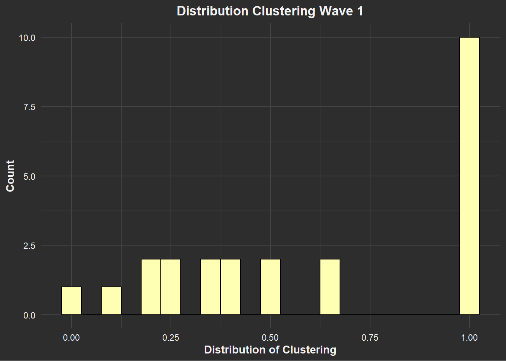
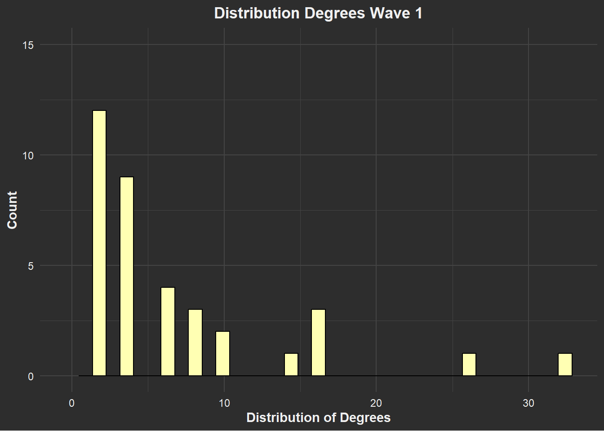
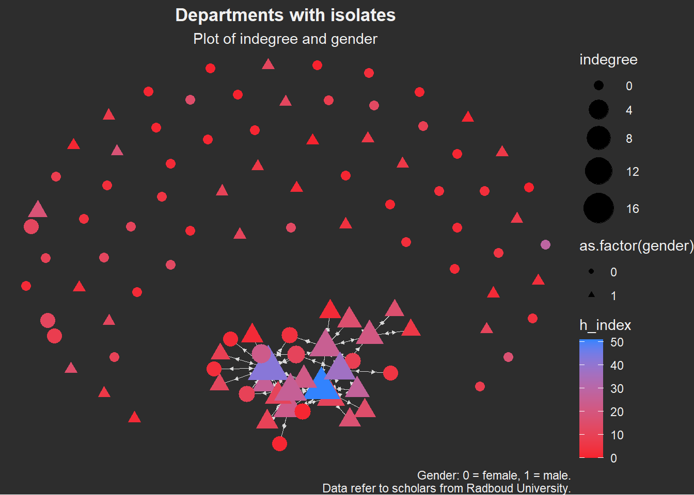

Experiment 1
Details of the first experiment go here.
Experiment 2
Details of the second experiment go here.
This is where I record my research and experiments.
Details of the first experiment go here.
Details of the second experiment go here.
rm(list = ls())require(tidyverse)
require(RSiena)
require(RsienaTwoStep)
# install.packages('data.table')
require(data.table) # mainly for faster data handling
# install.packages('xml2')
require(xml2)
# install.packages('rvest')
require(rvest)
require(igraph)
require(ggraph)
# install.packages('visNetwork')
require(visNetwork)
# install.packages('threejs')
require(threejs)
# install.packages('networkD3')
require(networkD3)Functions chunk
fpackage.check <- function(packages) {
lapply(packages, FUN = function(x) {
if (!require(x, character.only = TRUE)) {
install.packages(x, dependencies = TRUE)
library(x, character.only = TRUE)
}
})
}
fsave <- function(x, file = NULL, location = "./data/processed/") {
ifelse(!dir.exists("data"), dir.create("data"), FALSE)
ifelse(!dir.exists("data/processed"), dir.create("data/processed"), FALSE)
if (is.null(file))
file = deparse(substitute(x))
datename <- substr(gsub("[:-]", "", Sys.time()), 1, 8)
totalname <- paste(location, file, "_", datename, ".rda", sep = "")
save(x, file = totalname) #need to fix if file is reloaded as input name, not as x.
}
fload <- function(filename) {
load(filename)
get(ls()[ls() != "filename"])
}
fshowdf <- function(x, ...) {
knitr::kable(x, digits = 2, "html", ...) %>%
kableExtra::kable_styling(bootstrap_options = c("striped", "hover")) %>%
kableExtra::scroll_box(width = "100%", height = "300px")
}
# this is the most important one. We created it in the previous script
f_pubnets <- function(df_scholars = df, list_publications = publications, discip = "sociology" + "political science",
affiliation = "RU", waves = list(wave1 = c(2018, 2019, 2020), wave2 = c(2021, 2022, 2023))) {
publications <- list_publications %>%
bind_rows() %>%
distinct(title, .keep_all = TRUE)
df_scholars %>%
filter(affil1 == affiliation | affil2 == affiliation) %>%
filter(discipline == discip) -> df_sel
networklist <- list()
for (wave in 1:length(waves)) {
networklist[[wave]] <- matrix(0, nrow = nrow(df_sel), ncol = nrow(df_sel))
}
publicationlist <- list()
for (wave in 1:length(waves)) {
publicationlist[[wave]] <- publications %>%
filter(gs_id %in% df_sel$gs_id) %>%
filter(year %in% waves[[wave]]) %>%
select(author) %>%
lapply(str_split, pattern = ",")
}
publicationlist2 <- list()
for (wave in 1:length(waves)) {
publicationlist2[[wave]] <- publicationlist[[wave]]$author %>%
# lowercase
lapply(tolower) %>%
# Removing diacritics
lapply(stri_trans_general, id = "latin-ascii") %>%
# only last name
lapply(word, start = -1, sep = " ") %>%
# only last last name
lapply(word, start = -1, sep = "-")
}
for (wave in 1:length(waves)) {
# let us remove all publications with only one author
remove <- which(sapply(publicationlist2[[wave]], FUN = function(x) length(x) == 1) == TRUE)
publicationlist2[[wave]] <- publicationlist2[[wave]][-remove]
}
for (wave in 1:length(waves)) {
pubs <- publicationlist2[[wave]]
for (ego in 1:nrow(df_sel)) {
# which ego?
lastname_ego <- df_sel$lastname[ego]
# for all publications
for (pub in 1:length(pubs)) {
# only continue if ego is author of pub
if (lastname_ego %in% pubs[[pub]]) {
aut_pot <- which.max(pubs[[pub]] %in% lastname_ego)
# only continue if ego is first author of pub
if (aut_pot == 1) {
# check all alters/co-authors
for (alter in 1:nrow(df_sel)) {
# which alter
lastname_alter <- df_sel$lastname[alter]
if (lastname_alter %in% pubs[[pub]]) {
networklist[[wave]][ego, alter] <- networklist[[wave]][ego, alter] + 1
}
}
}
}
}
}
}
return(list(df = df_sel, network = networklist))
}More functions
fcolnet <- function(data = scholars, university = "RU", discipline = "sociology" + "political science",
waves = list(c(2015, 2018), c(2019, 2023)), type = c("first")) {
# step 1
demographics <- do.call(rbind.data.frame, data$demographics)
demographics <- demographics %>%
mutate(Universiteit1.22 = replace(Universiteit1.22, is.na(Universiteit1.22), ""), Universiteit2.22 = replace(Universiteit2.22,
is.na(Universiteit2.22), ""), Universiteit1.24 = replace(Universiteit1.24, is.na(Universiteit1.24),
""), Universiteit2.24 = replace(Universiteit2.24, is.na(Universiteit2.24), ""), discipline.22 = replace(discipline.22,
is.na(discipline.22), ""), discipline.24 = replace(discipline.24, is.na(discipline.24), ""))
sample <- which((demographics$Universiteit1.22 %in% university | demographics$Universiteit2.22 %in%
university | demographics$Universiteit1.24 %in% university | demographics$Universiteit2.24 %in%
university) & (demographics$discipline.22 %in% discipline | demographics$discipline.24 %in% discipline))
demographics_soc <- demographics[sample, ]
scholars_sel <- lapply(scholars, "[", sample)
# step 2
ids <- demographics_soc$au_id
nwaves <- length(waves)
nets <- array(0, dim = c(nwaves, length(ids), length(ids)), dimnames = list(wave = 1:nwaves, ids,
ids))
dimnames(nets)
# step 3
df_works <- tibble(works_id = unlist(lapply(scholars_sel$work, function(l) l$id)), works_author = unlist(lapply(scholars_sel$work,
function(l) l$author), recursive = FALSE), works_year = unlist(lapply(scholars_sel$work, function(l) l$publication_year),
recursive = FALSE))
df_works <- df_works[!duplicated(df_works), ]
# step 4
if (type == "first") {
for (j in 1:nwaves) {
df_works_w <- df_works[df_works$works_year >= waves[[j]][1] & df_works$works_year <= waves[[j]][2],
]
for (i in 1:nrow(df_works_w)) {
ego <- df_works_w$works_author[i][[1]]$au_id[1]
alters <- df_works_w$works_author[i][[1]]$au_id[-1]
if (sum(ids %in% ego) > 0 & sum(ids %in% alters) > 0) {
nets[j, which(ids %in% ego), which(ids %in% alters)] <- 1
}
}
}
}
if (type == "last") {
for (j in 1:nwaves) {
df_works_w <- df_works[df_works$works_year >= waves[[j]][1] & df_works$works_year <= waves[[j]][2],
]
for (i in 1:nrow(df_works_w)) {
ego <- rev(df_works_w$works_author[i][[1]]$au_id)[1]
alters <- rev(df_works_w$works_author[i][[1]]$au_id)[-1]
if (sum(ids %in% ego) > 0 & sum(ids %in% alters) > 0) {
nets[j, which(ids %in% ego), which(ids %in% alters)] <- 1
}
}
}
}
if (type == "all") {
for (j in 1:nwaves) {
df_works_w <- df_works[df_works$works_year >= waves[[j]][1] & df_works$works_year <= waves[[j]][2],
]
for (i in 1:nrow(df_works_w)) {
egos <- df_works_w$works_author[i][[1]]$au_id
if (sum(ids %in% egos) > 0) {
nets[j, which(ids %in% egos), which(ids %in% egos)] <- 1
}
}
}
}
output <- list()
output$data <- scholars_sel
output$nets <- nets
return(output)
}Scholar data
scholars <- fload("./data/processed/scholars_20240924.rda")
# make sure to lead fload first of course# save the output of your function
test <- fcolnet(data = scholars, university = "RU", discipline = c("sociology", "political science"),
waves = list(c(2015, 2018), c(2019, 2023)), type = c("all")) # all, first, last # which ties in there
# USE not all but first or last so the ties are directed from 'perspective' of first author of the
# publications usually first author has most prestigeEgo data
df_ego <- fload("./data/processed/df_ego_20241108.rda")test_w1 <- igraph::graph_from_adjacency_matrix(
test$nets[1,,], # first wave of data.
# (thus I select the array of networks and take the first matrix)
mode = c("directed"),
weighted = NULL,
diag = FALSE,
add.colnames = NULL,
add.rownames = NULL)summary(df_ego$gender)#> Min. 1st Qu. Median Mean 3rd Qu. Max.
#> 0.0000 0.0000 0.0000 0.4653 1.0000 1.0000table(df_ego$gender)#>
#> 0 1
#> 54 47# Create the histogram
ggplot(df_ego, aes(x = gender)) + geom_bar(color = "darkgrey", fill = "#B3DE69", width = 0.75) + labs(title = "Histogram of Gender",
x = "Gender\n (0 = female, 1 = male)", y = "Count") + theme(plot.title = element_text(hjust = 0.5,
face = "bold"))
# Wave 1: Gender count per department
table(df_ego$discipline.24, df_ego$gender)#>
#> 0 1
#> political science 28 23
#> sociology 26 24summary(df_ego$h_index)#> Min. 1st Qu. Median Mean 3rd Qu. Max.
#> 0.000 2.000 7.000 9.287 12.000 51.000# Histogram of prestige scores for Wave 1
hist(df_ego$h_index, breaks = 30, main = "Distribution of H-Index from yearX to yearX", xlab = "H Index",
ylab = "Frequency", col = "#B3DE69") # INSERT YEARS OF WAVE/TIME FRAME STILL
# Wave 1: Prestige distribution by dep. and total
df_ego %>%
group_by(discipline.24) %>%
summarise(mean_h_index = mean(h_index, na.rm = TRUE), min_h_index = min(h_index, na.rm = TRUE), max_h_index = max(h_index,
na.rm = TRUE), sd_h_index = sd(h_index, na.rm = TRUE)) %>%
bind_rows(df_ego %>%
summarise(discipline.24 = "total", mean_h_index = mean(h_index, na.rm = TRUE), min_h_index = min(h_index,
na.rm = TRUE), max_h_index = max(h_index, na.rm = TRUE), sd_h_index = sd(h_index, na.rm = TRUE)))#> # A tibble: 3 × 5
#> discipline.24 mean_h_index min_h_index max_h_index sd_h_index
#> <chr> <dbl> <dbl> <dbl> <dbl>
#> 1 political science 7.84 0 29 6.66
#> 2 sociology 10.8 1 51 11.4
#> 3 total 9.29 0 51 9.38vcount(test_w1)#> [1] 101ecount(test_w1)#> [1] 124Dyad census
igraph::dyad_census(test_w1)#> $mut
#> [1] 62
#>
#> $asym
#> [1] 0
#>
#> $null
#> [1] 4988Triad-census
igraph::triad_census(test_w1)#> [1] 160841 0 5513 0 0 0 0 0 0 0 263 0 0
#> [14] 0 0 33edge-density
# edge density
igraph::edge_density(test_w1)#> [1] 0.01227723reciprocity
reciprocity(test_w1, ignore.loops = TRUE, mode = c("default", "ratio"))#> [1] 1reciprocity = 1 makes sense since the ties are undirected rn
degree centrality / degreee?
degree_testw1 <- degree(test_w1)
degree_testw1 <- as.data.frame(degree_testw1)
ggplot(degree_testw1, aes(as.numeric(degree_testw1), colour = as.numeric(degree_testw1))) + geom_histogram(binwidth = 0.9) +
labs(title = "Distribution Degrees Wave 1", x = "Distribution of Degrees", y = "Count") + ylim(0,
65)
Betweenness centrality /betweenness?
betweenness_w1 <- igraph::betweenness(test_w1, directed = T)
betweenness_w1 <- as.data.frame(betweenness_w1)
ggplot(betweenness_w1, aes(as.numeric(betweenness_w1), colour = as.numeric(betweenness_w1))) + geom_histogram(binwidth = 1.2) +
labs(title = "Distribution Betweenness Wave 1", x = "Distribution of Betweenness", y = "Count")
Clustering
# clustering w1
clustering_w1 <- igraph::transitivity(test_w1, type = "local")
clustering_w1 <- as.data.frame(clustering_w1)
ggplot(clustering_w1, aes(as.numeric(clustering_w1), colour = as.numeric(clustering_w1))) + geom_histogram(binwidth = 0.05) +
labs(title = "Distribution Clustering Wave 1", x = "Distribution of Clustering", y = "Count")
Density
density_w1 <- igraph::edge_density(test_w1)
density_w1#> [1] 0.01227723Average path length
mean((ego_size(test_w1, order = 2, mode = "out") - 1)/vcount(test_w1))#> [1] 0.05391628Segregation
plot(test_w1, vertex.label = NA, edge.width = 0.2, edge.arrow.size = 0.2)
# names(df_ego) #see labels of variables
plot(test_w1,
vertex.color = ifelse(df_ego$gender == 1, "#FFED6F", "#80B1D3"), # now, I can use actor attributes for plotting.
# here: if gender = 1 (aka man) then red dot, if not then blue
vertex.label = NA,
vertex.size = 7.5,
edge.width = 0.5,
edge.arrow.size = 0.1,
main = "Network with isolates [yellow = female, blue = male]")
# if you dont want plot to turn, save the layout (look at SNASS)indegr_w1 <- igraph::degree(test_w1, mode = "in")
isolates_w1 <- V(test_w1)[degree(test_w1, mode = "all") == 0]
noisolates_w1 <- delete_vertices(test_w1, isolates_w1)
gsize(noisolates_w1) # edges#> [1] 124gorder(noisolates_w1) # vertices#> [1] 36plot(noisolates_w1,
vertex.color = ifelse(df_ego$gender == 1, "#80B1D3", "#FFED6F"), # now, I can use actor attributes for plotting.
# here: if gender = 1 (aka man) then red dot, if not then blue
vertex.label = NA,
vertex.size = 9,
vertex.frame.color = "black",
edge.curved = 0.2,
edge.arrow.size = 0.3,
edge.color = "gray",
edge.width = 0.2,
main = "Network without isolates [yellow = female, blue = male]")
Credits to Hannah Groennou for the basis of the code of these graphs. #### with isolates ?
indegr_w1 <- degree(test_w1, mode = "in")
# assign h-index to scholar
V(test_w1)$h_index <- df_ego$h_index
V(test_w1)$indegree <- indegr_w1
# set size of plot
options(repr.plot.width = 15, repr.plot.height = 18)
# plot wave 1 with isolates
p_iso <- ggraph(test_w1, layout = "fr") + geom_edge_link(color = "#BEBADA", width = 0.5) + geom_node_point(aes(size = indegree,
color = h_index)) + scale_size(range = c(3, 10)) + scale_color_gradient(low = "red", high = "blue") +
theme_void()
p_iso + labs(title = "Network with isolates", subtitle = "Plot of indegree and H-index", caption = "Data refer to: Scholars RU sociology and political science departments") +
theme(plot.title = element_text(hjust = 0.5, face = "bold"), plot.subtitle = element_text(hjust = 0.5),
plot.caption = element_text(hjust = 1))
indegr_w1 <- degree(test_w1, mode = "in")
# assign h-index to scholar
V(test_w1)$h_index <- df_ego$h_index
V(test_w1)$indegree <- indegr_w1
# remove isolates
noisolates_w1 <- delete_vertices(test_w1, V(test_w1)[degree(test_w1) == 0])
# set size of plot
options(repr.plot.width = 15, repr.plot.height = 15)
# plot wave 1 without isolates
p_noiso <- ggraph(noisolates_w1, layout = "fr") + geom_edge_link(color = "#BEBADA", width = 0.7) + geom_node_point(aes(size = indegree,
color = h_index)) + scale_size(range = c(3, 10)) + scale_color_gradient(low = "red", high = "blue") +
theme_void()
p_noiso + labs(title = "Network without isolates", subtitle = "Plot of indegree and H-index", caption = "Data refer to: Scholars RU sociology and political science departments") +
theme(plot.title = element_text(hjust = 0.5, face = "bold"), plot.subtitle = element_text(hjust = 0.5))
# allowed values for the font face include: “plain”, “italic”, “bold” and “bold.italic”.indegr_w1 <- degree(test_w1, mode = "in")
# assign h-index to scholar
V(test_w1)$h_index <- df_ego$h_index
# assign discipline to scholar
V(test_w1)$discipline <- df_ego$discipline.24
V(test_w1)$indegree <- indegr_w1
# remove isolates
noisolates_w1 <- delete_vertices(test_w1, V(test_w1)[degree(test_w1) == 0])
# set size of plot
options(repr.plot.width = 15, repr.plot.height = 15)
# plot wave 1 without isolates
p_noiso <- ggraph(noisolates_w1, layout = "fr") + geom_edge_link(color = "#BEBADA", width = 0.7) + geom_node_point(aes(size = indegree,
color = h_index, shape = as.factor(discipline))) + scale_size(range = c(3, 10)) + scale_color_gradient(low = "red",
high = "blue") + theme_void()
p_noiso + labs(title = "Departments without isolates", subtitle = "Plot of indegree and H-index", caption = "Data refer to scholars from Radboud University.") +
theme(plot.title = element_text(hjust = 0.5, face = "bold"), plot.subtitle = element_text(hjust = 0.5))
# allowed values for the font face include: “plain”, “italic”, “bold” and “bold.italic”.# assign gender to scholar
V(test_w1)$gender <- df_ego$gender
# assign discipline to scholar
V(test_w1)$discipline <- df_ego$discipline.24
V(test_w1)$indegree <- indegr_w1
p_gender <- ggraph(test_w1, layout = "fr") + geom_edge_link(color = "#BEBADA", width = 0.5) + geom_node_point(aes(size = indegree,
color = as.factor(discipline), shape = as.factor(gender))) + scale_size(range = c(3, 10)) + theme_void()
p_gender + labs(title = "Departments with isolates", subtitle = "Plot of indegree and gender", caption = "Gender: 0 = female, 1 = male.\n Data refer to scholars from Radboud University.") +
theme(plot.title = element_text(hjust = 0.5, face = "bold"), plot.subtitle = element_text(hjust = 0.5),
plot.caption = element_text(hjust = 1))# assign gender to scholar
V(test_w1)$gender <- df_ego$gender
# assign disciplines to scholars
V(test_w1)$discipline <- df_ego$discipline.24
V(test_w1)$indegree <- indegr_w1
# remove isolates
noisolates_w1 <- delete_vertices(test_w1, V(test_w1)[degree(test_w1) == 0])
p_noisgender <- ggraph(noisolates_w1, layout = "fr") + geom_edge_link(color = "#BEBADA", width = 0.5) +
geom_node_point(aes(size = indegree, color = as.factor(discipline), shape = as.factor(gender))) +
scale_size(range = c(3, 10)) + theme_void()
p_noisgender + labs(title = "Departments without isolates", subtitle = "Plot of indegree and gender",
caption = "Gender: 0 = female, 1 = male.\n Data refer to scholars from Radboud University.") + theme(plot.title = element_text(hjust = 0.5,
face = "bold"), plot.subtitle = element_text(hjust = 0.5), plot.caption = element_text(hjust = 1))# assign gender to scholar
V(test_w1)$gender <- df_ego$gender
# V(test_w1)$gender <- ifelse(df_ego$gender >= 0.5,1,0)
# assign h-index to scholar
V(test_w1)$h_index <- df_ego$h_index
V(test_w1)$indegree <- indegr_w1
p_gender <- ggraph(test_w1, layout = "fr") + geom_edge_link(color = "#BEBADA", width = 0.5) + geom_node_point(aes(size = indegree,
color = h_index, shape = as.factor(gender))) + scale_size(range = c(3, 10)) + scale_color_gradient(low = "red",
high = "blue") + theme_void()
p_gender + labs(title = "Network with isolates", subtitle = "Plot of indegree, H-index and gender", caption = "Gender: 0 = female, 1 = male.\n Data refer to: Scholars RU sociology and political science departments.") +
theme(plot.title = element_text(hjust = 0.5, face = "bold"), plot.subtitle = element_text(hjust = 0.5),
plot.caption = element_text(hjust = 1))
# assign gender to scholar
V(test_w1)$gender <- df_ego$gender
# assign h-index to scholar
V(test_w1)$h_index <- df_ego$h_index
V(test_w1)$indegree <- indegr_w1
# remove isolates
noisolates_w1 <- delete_vertices(test_w1, V(test_w1)[degree(test_w1) == 0])
p_noisogender <- ggraph(noisolates_w1, layout = "fr") + geom_edge_link(color = "#BEBADA", width = 0.5) +
geom_node_point(aes(size = indegree, color = h_index, shape = as.factor(gender))) + scale_size(range = c(3,
10)) + scale_color_gradient(low = "red", high = "blue") + theme_void()
p_noisogender + labs(title = "Network without isolates", subtitle = "Plot of indegree, H-index and gender",
caption = "Gender: 0 = female, 1 = male.\n Data refer to: Scholars RU sociology and political science departments.") +
theme(plot.title = element_text(hjust = 0.5, face = "bold"), plot.subtitle = element_text(hjust = 0.5))
colors(distinct = TRUE) # prints all colors R knows
palette.pals()
# [1] 'R3' 'R4' 'ggplot2' [4] 'Okabe-Ito' 'Accent' 'Dark 2' [7] 'Paired' 'Pastel 1' 'Pastel 2' [10]
# 'Set 1' 'Set 2' 'Set 3' [13] 'Tableau 10' 'Classic Tableau' 'Polychrome 36' [16] 'Alphabet'
palette.colors(palette = "-palette name here-")
# [1] '#000000' '#E69F00' '#56B4E9' '#009E73' '#F0E442' '#0072B2' [7] '#D55E00' '#CC79A7' '#999999'## Demonstrate the colors 1:8 in different palettes using a custom matplot()
sinplot <- function(main = NULL, n = 8) {
x <- outer(seq(-pi, pi, length.out = 50), seq(0, pi, length.out = n), function(x, y) sin(x - y))
matplot(x, type = "l", lwd = 4, lty = 1, col = 1:n, ylab = "", main = main)
}
sinplot("default palette")
palette("R3")
sinplot("R3")
palette("Okabe-Ito")
sinplot("Okabe-Ito")
palette("Tableau")
sinplot("Tableau", n = 10) # i like
palROB <- colorRampPalette(c("red", "darkorange2", "blue"), space = "Lab")
palette(palROB(16))
sinplot("palROB(16)", n = 16) # the orange purple blue rainbow retro vibe yay
palette("default") # resetpalette.swatch <- function(palette = palette.pals(), n = 8, nrow = 8, border = "black", cex = 1, ...) {
cols <- sapply(palette, palette.colors, n = n, recycle = TRUE)
ncol <- ncol(cols)
nswatch <- min(ncol, nrow)
op <- par(mar = rep(0.1, 4), mfrow = c(1, min(5, ceiling(ncol/nrow))), cex = cex, ...)
on.exit(par(op))
while (length(palette)) {
subset <- seq_len(min(nrow, ncol(cols)))
plot.new()
plot.window(c(0, n), c(0.25, nrow + 0.25))
y <- rev(subset)
text(0, y + 0.1, palette[subset], adj = c(0, 0))
y <- rep(y, each = n)
rect(rep(0:(n - 1), n), y, rep(1:n, n), y - 0.5, col = cols[, subset], border = border)
palette <- palette[-subset]
cols <- cols[, -subset, drop = FALSE]
}
}
palette.swatch()
palette.swatch(n = 26) # show full 'Alphabet'; recycle most others